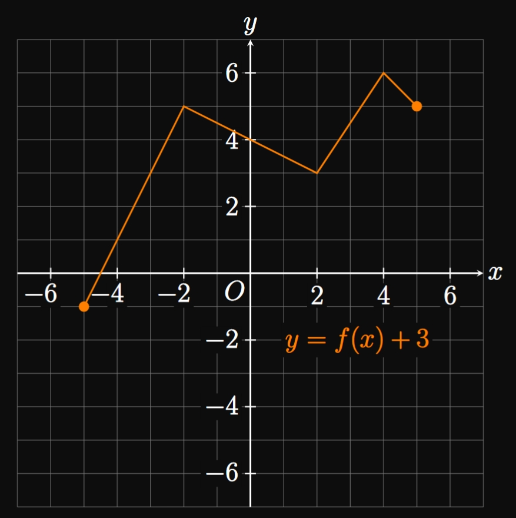
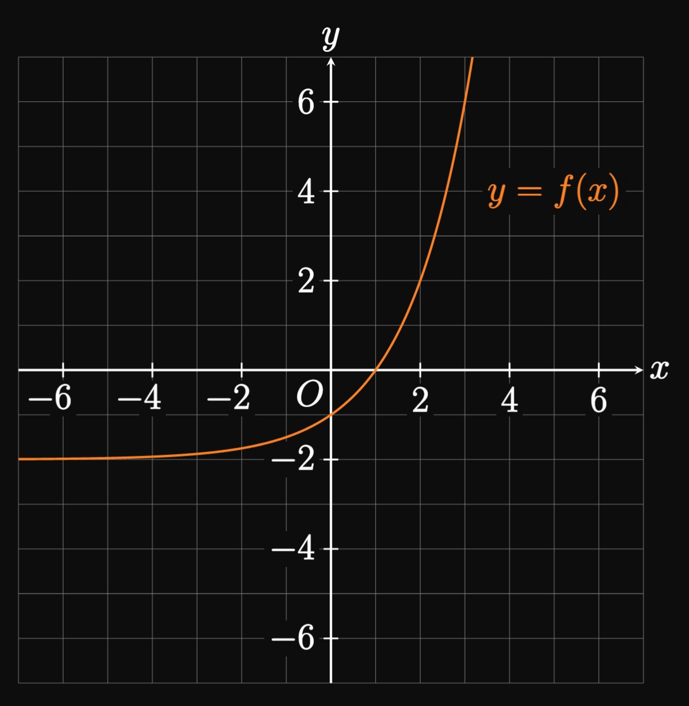
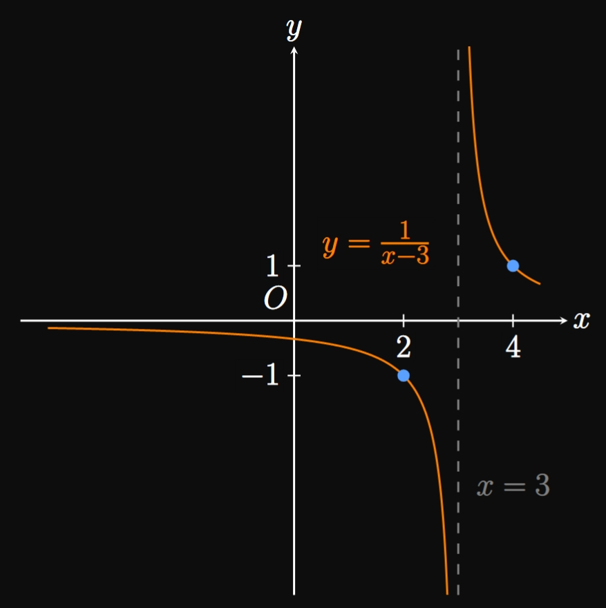

SOLUTION
A function \(f\) is one-to-one if and only if it never outputs the same value multiple times.
Thus, we have
\[f(x_1) \ne f(x_2) \for x_1 \ne x_2 \pd\]
EXERCISE 2
A one-to-one function \(f\) has domain \(D\) and range \(E.\)
List three mathematical properties about its inverse function, \(\inv f.\)
SOLUTION
The domain and range are reversed:
\(\inv f\) has domain \(E\) and range \(D.\)
\(\inv f\) satisfies
\[f(\inv f(x)) = x \and \inv f(f(x)) = x\]
for all \(x\) in \(D\) and \(E.\)
Thus, if \(y = f(x),\) then \(x = \inv f(y).\)
The graph of \(y = \inv f(x)\) is the reflection of \(y = f(x)\)
across the line \(y = x.\)
EXERCISE 3
Let \(f(x) = x^3 - 5x + 7\) and \(g(x) = \tfrac{1}{2} x^4 + x^2 - 4.\)
Find
\((f + g)(-2)\)
\((g - f)(-2)\)
\((fg)(-2)\)
\(\ds \par{\frac{f}{g}}(-2)\)
SOLUTION
We have
\[
\baf
&&f(-2) &= (-2)^3 - 5(-2) + 7 = 9 &\nl
\laWord{and} &&g(-2) &= \tfrac{1}{2} (-2)^4 + (-2)^2 - 4 = 8 \pd
\eaf
\]
Then attaining the requested quantities is trivial.
If \(f(x) = x^3 - x\) and \(g(x) = \sqrt{5x + 2},\)
then find \((g/f)(x)\) and its domain.
SOLUTION
We have
\[
\ba
\par{\frac{g}{f}}(x) &= \frac{g(x)}{f(x)} \nl
&= \frac{\sqrt{5x + 2}}{x^3 - x} \pd
\ea
\]
Recall that a square root function can't have a negative argument.
Hence, the domain of \(g\) is
\[
\ba
\{x \mid 5x + 2 \geq 0\} &= \left\{x \mid x \geq -\tfrac{2}{5} \right\} \nl
&= [-\tfrac{2}{5}, \infty) \pd
\ea
\]
Conversely, the domain of \(f\) is the set of all real numbers, \(\RR\) \(= (-\infty, \infty).\)
The intersection of these sets is
\[[-\tfrac{2}{5}, \infty) \cap (-\infty, \infty) = [-\tfrac{2}{5}, \infty) \pd\]
Because division by \(0\) is ruled out,
the domain of \((g/f)(x)\) must also exclude values for which \(f(x) = 0.\)
We see
\[
\ba
f(x) = x^3 - x &= 0 \nl
x (x^2 - 1) &= 0 \nl
x (x + 1)(x - 1) &= 0 \nl
\implies x &= -1 \cma x = 0 \cma x = 1 \pd
\ea
\]
Thus, the domain of \(g/f\) is
\[
\ba
\left\{x \in [-\tfrac{2}{5}, \infty) \mid x \ne -1 \cma x \ne 0 \cma x \ne 1 \right\}
= \boxed{[-\tfrac{2}{5}, 0) \cup (0, 1) \cup (1, \infty)}
\ea
\]
EXERCISE 6
For an odd function \(g,\)
show that reflecting the graph of \(y = g(x)\) across the \(x\)-axis
yields the same graph as reflecting it across the \(y\)-axis.
SOLUTION
Reflecting \(y = g(x)\) across the \(x\)-axis gives the graph of \(y = -g(x).\)
Reflecting \(y = g(x)\) across the \(y\)-axis results in the graph of \(y = g(-x).\)
Yet \(g\) is odd, so it satisfies \(-g(x) = g(-x).\)
Thus, both graphs are the same.
EXERCISE 7
The graphs of \(y = f(x)\) and \(y = g(x)\) are shown in Figure 16.
Find \((f + g)(4)\) and \((g/f)(4).\)
Determine \((f \circ g)(4)\) and \((g \circ f)(4).\)
Let \(h(x) = f(2x - 1).\)
Find \((h \circ h)(3).\)
No.
The graph of \(y = f(x)\) fails the Horizontal Line Test over \([-1, 4].\)
Yes.
The function \(g\) never takes on the same \(y\)-value more than once on \([-4, 6];\)
its graph passes the Horizontal Line Test.
EXERCISE 8
The following table shows values of the one-to-one function \(p.\)
\(x\)
\(-5\)
\(-3\)
\(2\)
\(3\)
\(p(x)\)
\(4\)
\(-2\)
\(3\)
\(-5\)
Find \(\inv p(-2)\) and \(\inv p(3).\)
What are the domain and range of \(\inv p \ques\)
Determine \((p \circ p)(2).\)
Let \(q(x) = x^3 \, p(2x).\)
Calculate \(q(1).\)
SOLUTION
The inverse function \(\inv p\) swaps the effect of \(p.\)
Accordingly, we see
\[
\baat{3}
p(-3) &= -2 \, &\iffArrow \, && \inv p(-2) &= \boxed{-3} \nl
p(2) &= 3 \, &\iffArrow \, && \inv p(3) &= \boxed 2
\eaat
\]
The domain and range of \(p\) are, respectively,
\(\{-5, -3, 2, 3\}\) and \(\{-5, -2, 3, 4\}.\)
We swap these sets for the inverse function:
the domain of \(\inv p\) is the range of \(p,\)
and the range of \(\inv p\) is the domain of \(p.\)
Domain of \(\inv p\)
Range of \(\inv p\)
\(\{-5, -2, 3, 4\}\)
\(\{-5, -3, 2, 3\}\)
Because \(p(2) = 3,\) we see
\[
\ba
(p \circ p)(2) &= p(p(2)) \nl
&= p(3) \nl
&= \boxed{-5}
\ea
\]
The graph of \(y = f(x)\) is shown in Figure 17.
Graph the following functions.
\(y = f(x + 1)\)
\(y = f(x) + 3\)
\(y = 2 f(x) + 1\)
\(y = f(2x)\)
SOLUTION
We shift the graph of \(y = f(x)\) by \(1\) unit to the left.
The graph of \(y = f(x)\) is translated \(3\) units up.

First we stretch the graph of \(y = f(x)\) vertically by a factor of \(2.\)
Then we shift the resulting graph up \(1\) unit.
We compress the graph of \(y = f(x)\) horizontally by a factor of \(2.\)
EXERCISE 10
Given the graph of \(y = f(x)\) in Figure 18,
plot the graphs of \(y = f(x/2)\) and \(y = \tfrac{1}{2} f(x).\)
SOLUTION
The graph of \(y = f(x/2)\) is the graph of \(y = f(x)\) stretched horizontally by a factor of \(2.\)
The graph of \(y = \tfrac{1}{2} f(x)\) is the graph of \(y = f(x)\) compressed vertically by a factor of \(2.\)
EXERCISE 11
The graph of the one-to-one function \(y = f(x)\) is shown in Figure 19.
Plot the graph of \(y = \inv f(x).\)

SOLUTION
The graph of \(y = \inv f(x)\) is a reflection of \(y = f(x)\) across the line \(y = x.\)
EXERCISE 12
The graph of \(y = 1/x\) was graphed in
Example 0.4-5.
Using this parent function,
graph each function and state its domain and range.
\(\ds y = -\frac{1}{x}\)
\(\ds y = \frac{1}{x - 3}\)
\(\ds y = \frac{1}{4x + 8} - 2\)
SOLUTION
Let \(f(x) = 1/x,\) whose graph is as follows.
We reflect the graph of \(f(x) = 1/x\) across the \(x\)-axis to get \(-f(x) = -1/x.\)
Equivalently, note that \(f(-x) = 1/(-x),\)
so reflecting \(y = f(x)\) across the \(y\)-axis also yields the graph of \(y = -1/x.\)
Domain
Range
\((-\infty, 0) \cup (0, \infty)\)
\((-\infty, 0) \cup (0, \infty)\)
We shift the graph of \(f(x) = 1/x\) by \(3\) units to the right
to attain the graph of \(f(x - 3) = 1/(x - 3).\)
The vertical asymptote is now at \(x = 3.\)
Domain
Range
\((-\infty, 3) \cup (3, \infty)\)
\((-\infty, 0) \cup (0, \infty)\)

Note that
\[\frac{1}{4x + 8} - 2 = \frac{1}{4(x + 2)} - 2 = f(4(x + 2)) - 2 \pd\]
Thus, we compress the graph of \(f(x)\) horizontally by a factor of \(4.\)
Afterward, we shift the graph \(2\) units left and \(2\) units down.
The vertical asymptote now becomes \(x = -2,\)
and the horizontal asymptote becomes \(y = -2.\)
Domain
Range
\((-\infty, -2) \cup (-2, \infty)\)
\((-\infty, -2) \cup (-2, \infty)\)
EXERCISE 13
For
\[\ds y = 3 - x^2\]
graph the function, starting with the parent function and applying the rules of transformations.
Then state the domain and range.
SOLUTION
We begin by reflecting the parent graph, the parabola \(y = x^2,\) across the \(x\)-axis to attain \(y = -x^2.\)
Then we translate the graph upward \(3\) units to get \(y = -x^2 + 3.\)
Domain
Range
\((-\infty, \infty)\)
\((-\infty, 3]\)
EXERCISE 14
For
\[\ds y = - \abs{x - 2}\]
graph the function, starting with the parent function and applying the rules of transformations.
Then state the domain and range.
SOLUTION
We begin by reflecting the parent graph, \(y = \abs x,\) across the \(x\)-axis to attain \(y = - \abs x.\)
Then we move the graph to the right by \(2\) units to acquire \(y = - \abs{x - 2}.\)
Domain
Range
\((-\infty, \infty)\)
\((-\infty, 0]\)
EXERCISE 15
For
\[\ds y = \tfrac{1}{4} x^3 - 1\]
graph the function, starting with the parent function and applying the rules of transformations.
Then state the domain and range.
SOLUTION
We begin by compressing the parent graph, \(y = x^3,\) vertically by a factor of \(4\)
to find \(y = \tfrac{1}{4} x^3.\)
Then moving the graph down \(1\) unit produces \(y = \tfrac{1}{4} x^3 - 1.\)
Domain
Range
\((-\infty, \infty)\)
\((-\infty, \infty)\)
EXERCISE 16
For
\[\ds y = \tfrac{1}{2} \sqrt{5 - x}\]
graph the function, starting with the parent function and applying the rules of transformations.
Then state the domain and range.
SOLUTION
Observe that
\[\tfrac{1}{2} \sqrt{5 - x} = \tfrac{1}{2} \sqrt{-(x - 5)} \pd\]
We begin by reflecting the parent graph, \(y = \sqrt x,\)
across the \(y\)-axis to get \(y = \sqrt{-x}.\)
Then we compress this graph vertically by a factor of \(2\)
to attain \(y = \tfrac{1}{2} \sqrt{-x}.\)
Lastly, we shift the graph \(5\) units to the right to attain
\(y = \tfrac{1}{2} \sqrt{-(x - 5)}.\)
Domain
Range
\((-\infty, 5]\)
\([0, \infty)\)
EXERCISE 17
For
\[\ds y = \frac{2}{3 - x} + 1\]
graph the function, starting with the parent function and applying the rules of transformations.
Then state the domain and range.
SOLUTION
Observe that
\[\frac{2}{3 - x} + 1 = \frac{2}{-(x - 3)} + 1 \pd\]
We begin by reflecting the parent graph, \(y = 1/x,\)
across the \(y\)-axis to get \(y = 1/(-x).\)
Next we stretch the graph vertically by a factor of \(2\) to get \(y = 2/(-x).\)
Finally, we translate the graph \(3\) units to the right and \(1\) unit up;
doing so yields \(y = 2/[-(x - 3)] + 1.\)
The graph has a vertical asymptote at \(x = 3\) and a horizontal asymptote at \(y = 1.\)
Domain
Range
\((-\infty, 3) \cup (3, \infty)\)
\((-\infty, 1) \cup (1, \infty)\)
EXERCISE 18
For
\[\ds y = \sqrt[3]{-32 - 8x}\]
graph the function, starting with the parent function and applying the rules of transformations.
Then state the domain and range.
SOLUTION
Observe that
\[
\ba
\sqrt[3]{-32 - 8x} &= \sqrt[3]{-8(x + 4)} \nl
&= \sqrt[3]{-8} \, \sqrt[3]{x + 4} \nl
&= -2 \, \sqrt[3]{x + 4} \pd
\ea
\]
We reflect the parent graph, \(y = \sqrt[3] x,\)
across the \(x\)-axis to get \(y = -\sqrt[3] x.\)
Then we stretch the graph vertically by a factor of \(2\)
to attain \(y = -2 \sqrt[3] x.\)
Finally, we move the graph \(4\) units to the left to acquire \(y = -2 \, \sqrt[3]{x + 4}.\)
Domain
Range
\((-\infty, \infty)\)
\((-\infty, \infty)\)
EXERCISE 19
For
\[\ds y = \abs{1 - x^2} - 2\]
graph the function, starting with the parent function and applying the rules of transformations.
Then state the domain and range.
SOLUTION
The graph of \(y = 1 - x^2\) is an inverted parabola shifted up \(1\) unit.
This graph is below the \(x\)-axis for \(-\infty \lt x \lt -1\) and \(1 \lt x \lt \infty,\)
so we reflect these portions across the \(x\)-axis to get \(y = \abs{1 - x^2}.\)
Lastly, we shift the graph down \(2\) units to get \(y = \abs{1 - x^2} - 2.\)
the given function is in the form \(f \circ g.\)
Find \(f\) and \(g\).
SOLUTION
The composite function says:
First add \(1\) to the input, and then raise the result to the fourth power.
Hence, the inner function (representing the first step) is \(g(x) = x + 1.\)
Correspondingly, the outer function (representing the last step) is \(f(x) = x^4.\)
We therefore write
\[
\boxed{\ba
f(x) &= x^4 \nl
g(x) &= x + 1
\ea}
\]
EXERCISE 34
For
\[\ds \frac{2}{6t + 5}\]
the given function is in the form \(f \circ g.\)
Find \(f\) and \(g\).
SOLUTION
The composite function says:
First multiply the input by \(6\) and add \(5,\) and then divide \(2\) by the result.
Hence, the inner function (representing the first step) is \(g(t) = 6t + 5.\)
So the outer function (modeling the last step) is \(f(t) = 2/t.\)
We have
\[
\boxed{\ba
f(t) &= \frac{2}{t} \nl
g(t) &= 6t + 5
\ea}
\]
EXERCISE 35
For
\[\ds \sqrt{4x}\]
the given function is in the form \(f \circ g.\)
Find \(f\) and \(g\).
SOLUTION
Method 1
The composite function says:
First multiply the input by \(4,\) and then take the square root of the result.
Thus, the inner function is \(4x\) and the outer function is \(\sqrt x.\)
We therefore let
\[
\boxed{\ba
f(x) &= \sqrt x \nl
g(x) &= 4x
\ea}
\]
Method 2
Note that
\[\sqrt{4x} = \sqrt{4} \, \sqrt x = 2 \sqrt x \pd\]
Thus, we let
\[
\boxed{\ba
f(x) &= 2 \sqrt x \nl
g(x) &= x
\ea}
\]
EXERCISE 36
For
\[\ds \sqrt[3]{8x^2 - 2}\]
the given function is in the form \(f \circ g.\)
Find \(f\) and \(g\).
SOLUTION
The inner function is \(8x^2 - 2,\)
and the outer function is \(\sqrt[3] x.\)
So
\[
\boxed{\ba
f(x) &= \sqrt[3] x \nl
g(x) &= 8x^2 - 2
\ea}
\]
EXERCISE 37
Find functions \(f,\) \(g,\) and \(h\) such that
\[(f \circ g \circ h)(x) = \frac{4}{\sqrt[3]{8 - x}} \pd\]
SOLUTION
Let's dissect this composite function one layer at a time, starting with the inner function.
The composite function says:
First, subtract the input from \(8.\)
Second, take the cube root of the result.
Third, divide \(4\) by the result.
Noting the chronological sequence, we have
\[
\boxed{\ba
f(x) &= \frac{4}{x} \nl
g(x) &= \sqrt[3] x \nl
h(x) &= 8 - x
\ea}
\]
EXERCISE 38
Determine three functions whose composition yields
\(5^{\sqrt{12t + 17}}.\)
SOLUTION
Let's dissect this composite function one layer at a time, starting with the inner function.
The composite function says:
First, multiply the input by \(12\) and add \(17.\)
Second, take the square root of the result.
Third, raise \(5\) to the power of the result.
By noting the chronological sequence, the three functions are
\[
\boxed{\ba
f(t) &= 5^t \nl
g(t) &= \sqrt t \nl
h(t) &= 12t + 17
\ea}
\]
Then \((f \circ g \circ h)(t)\) produces the given function.
EXERCISE 39
Functions \(f\) and \(g\) are defined by
\[f(x) = \sqrt{20 - 2x} \and g(x) = 7x - x^2 \pd\]
Find \((f \circ g)(x)\) and its domain.
SOLUTION
We have
\[
\ba
f(g(x)) &= f \par{7x - x^2} \nl
&= \sqrt{20 - 2 \par{7x - x^2}} \nl
&= \sqrt{2x^2 - 14x + 20} \pd
\ea
\]
The inside of the square root must be nonnegative,
so we need
\[
\ba
2x^2 - 14x + 20 &\geq 0 \nl
x^2 - 7x + 10 &\geq 0 \nl
(x - 2)(x - 5) &\geq 0 \pd
\ea
\]
The inequality is satisfied if both factors are nonnegative or both are nonpositive.
Both factors are nonnegative when \(x \geq 5\) and nonpositive when \(x \leq 2.\)
Hence, the domain is
\[
\{x \mid x \leq 2 \text{ and } x \geq 5\} = \boxed{(-\infty, 2] \cup [5, \infty)}
\]
SOLUTION
The two functions are inverses if and only if \(f(g(x)) = x\) and \(g(f(x)) = x.\)
We have
\[
\ba
f(g(x)) &= f \par{2x - 6} \nl
&= \tfrac{1}{2} (2x - 6) + 4\nl
&= x + 1 \ne x \pd
\ea
\]
No. The two functions are not inverses.
EXERCISE 41
For
\[\ds C(u) = u \cmaa D(u) = \frac{1}{u}\]
determine whether the two functions are inverses.
SOLUTION
The two functions are inverses if and only if \(C(D(u)) = u\) and \(D(C(u)) = u.\)
We have
\[
\ba
C(D(u)) &= C \par{\frac{1}{u}} \nl
&= \frac{1}{u} \ne u \pd
\ea
\]
No. The two functions are not inverses.
Ironically, the two functions are reciprocals,
meaning
\[C(u) = [D(u)]^{-1} \but C(u) \ne \inv D(u) \pd\]
EXERCISE 42
For
\[\ds f(x) = x^3 \cmaa g(x) = \sqrt[3] x\]
determine whether the two functions are inverses.
SOLUTION
The two functions are inverses if and only if \(f(g(x)) = x\) and \(g(f(x)) = x.\)
We have
\[
\ba
f(g(x)) &= f \par{\sqrt[3] x} \nl
&= \par{\sqrt[3] x}^3 \nl
&\equalsCheck x \pd
\ea
\]
Moreover,
\[
\ba
g(f(x)) &= g \par{x^3} \nl
&= \sqrt[3]{x^3} \nl
&\equalsCheck x \pd
\ea
\]
Yes. The two functions are inverses.
SOLUTION
The two functions are inverses if and only if \(A(B(t)) = t\) and \(B(A(t)) = t.\)
We have
\[
\ba
A(B(t)) &= A \par{\sqrt[3]{t - 4}} \nl
&= \par{\sqrt[3]{t - 4}}^3 - 4 \nl
&= (t - 4) - 4 \nl
&= t - 8 \ne t \pd
\ea
\]
No. The two functions are not inverses.
EXERCISE 44
For
\[\ds f(x) = 5x - 14\]
find the function's inverse.
SOLUTION
First we write
\[y = 5x - 14 \pd\]
Swapping \(x\) and \(y\) gives
\[x = 5y - 14 \pd\]
We solve for \(y,\) as follows:
\[
\ba
5y &= x + 14 \nl
\implies y &= \frac{x + 14}{5} \pd
\ea
\]
Accordingly, the inverse function is
\[\inv f(x) = \boxed{\frac{x + 14}{5}}\]
EXERCISE 45
For
\[\ds g(x) = 9x^5 - 4\]
find the function's inverse.
SOLUTION
First we write
\[y = 9x^5 - 4 \pd\]
Swapping \(x\) and \(y\) gives
\[x = 9y^5 - 4 \pd\]
We solve for \(y,\) as follows:
\[
\ba
9y^5 &= x + 4 \nl
y^5 &= \frac{x + 4}{9} \nl
\implies y &= \sqrt[5]{\frac{x + 4}{9}} \pd
\ea
\]
Accordingly, the inverse function is
\[\inv g(x) = \boxed{\sqrt[5]{\frac{x + 4}{9}}}\]
EXERCISE 46
For
\[\ds f(x) = \frac{4x + 4}{x - 3}\]
find the function's inverse.
SOLUTION
First we write
\[y = \frac{4x + 4}{x - 3} \pd\]
Swapping \(x\) and \(y\) gives
\[x = \frac{4y + 4}{y - 3} \pd\]
We solve for \(y,\) as follows:
\[
\ba
x(y - 3) &= 4y + 4 \nl
xy - 3x &= 4y + 4 \nl
y (x - 4) &= 3x + 4 \nl
\implies y &= \frac{3x + 4}{x - 4} \pd
\ea
\]
Accordingly, the inverse function is
\[\inv f(x) = \boxed{\frac{3x + 4}{x - 4}}\]
EXERCISE 47
For
\[\ds h(t) = \sqrt[3]{\tfrac{1}{4} t + 5}\]
find the function's inverse.
SOLUTION
First we write
\[y = \sqrt[3]{\tfrac{1}{4} t + 5} \pd\]
Swapping \(t\) and \(y\) gives
\[t = \sqrt[3]{\tfrac{1}{4} y + 5} \pd\]
We solve for \(y,\) as follows:
\[
\ba
t^3 &= \tfrac{1}{4} y + 5 \nl
4t^3 &= y + 20 \nl
\implies y &= 4t^3 - 20 \pd
\ea
\]
Accordingly, the inverse function is
\[\inv h(t) = \boxed{4t^3 - 20}\]
EXERCISE 48
If a function with domain \(\RR\) is one-to-one, then it is not even.
SOLUTIONTrue.
The function \(f\) is even if and only if \(f(-x) = f(x).\)
Thus, points on the graph of \(y = f(x)\) are \((x, y)\)
and \((-x, y).\)
Because \(f\) takes on the same \(y\)-value multiple times,
it is not one-to-one.
Accordingly, even functions can never be one-to-one on \(\RR.\)
EXERCISE 49
Consider the linear function \(f(x) = mx + b.\)
Prove that the graph of \(y = \inv f(x)\) has slope \(1/m.\)
Is the graph of \(y = -\inv f(x)\) perpendicular to the graph of \(y = f(x) \ques\)
Is the graph of \(y = \inv f(-x)\) perpendicular to the graph of \(y = f(x) \ques\)
SOLUTION
First we write \(y = mx + b.\)
Interchanging \(x\) and \(y\) yields \(x = my + b,\)
and solving for \(y\) gives
\[y = \frac{x - b}{m} = \frac{x}{m} - \frac{b}{m} \pd\]
Thus, the inverse function is
\[\inv f(x) = \frac{x}{m} - \frac{b}{m} \cma\]
whose slope is \(1/m,\) as requested.
Yes.
We see
\[
- \inv f(x) = -\frac{x}{m} + \frac{b}{m} \cma
\]
whose slope is \(-1/m.\)
Because the slopes of \(f\) and \(- \inv f\)
are negative reciprocals of each other,
their graphs are perpendicular to each other.
Yes.
We see
\[
\inv f(-x) = \frac{-x}{m} - \frac{b}{m} \cma
\]
whose slope is also \(-1/m.\)
EXERCISE 50
A circle's circumference \(C\) as a function of its radius \(r\) is given by
\(C(r) = 2 \pi r.\)
Find the function's inverse and explain its significance.
SOLUTION
The function's inverse yields the circle's radius \(r\) as a function of its circumference \(C.\)
Thus, our objective is to solve for \(r\) in terms of \(C.\)
In \(C = 2 \pi r,\)
solving for \(r\) yields the inverse function:
\[r(C) = \boxed{\frac{C}{2 \pi}}\]
EXERCISE 51
A sphere's volume \(V\) as a function of its radius \(r\) is given by
\(V(r) = \tfrac{4}{3} \pi r^3.\)
Find the function's inverse and explain its significance.
SOLUTION
The function's inverse yields the sphere's radius \(r\) as a function of its volume \(V.\)
Thus, our objective is to solve for \(r\) in terms of \(V.\)
In \(V = \tfrac{4}{3} \pi r^3,\)
solving for \(r\) yields the inverse function:
\[r(V) = \boxed{\sqrt[3]{\frac{3V}{4 \pi}}}\]
EXERCISE 52
What transformations, in order, must be applied to \(y = f(x)\)
to attain the graph of \(y = -4 \inv f(x - 6) + 9 \ques\)
SOLUTION
Recall that the graphs of \(y = f(x)\) and \(y = \inv f(x)\) are reflections across the line \(y = x.\)
Standard transformation rules govern in transforming \(y = \inv f(x)\) to \(y = -4 \inv f(x - 6) + 9.\)
The order is therefore as follows.
Reflection across the line \(y = x.\)
Reflection across the \(x\)-axis.
Vertical stretch by a factor of \(4.\)
Translation of \(6\) units right and \(9\) units up.
EXERCISE 53
Describe, in order, the transformations applied to \(y = g(x)\)
to acquire the graph of \(y = \tfrac{1}{3} \inv g(4 - 2x) - 7.\)
SOLUTION
Recall that the graphs of \(y = g(x)\) and \(y = \inv g(x)\) are reflections across the line \(y = x.\)
We rewrite the transformed function as
\[y = \tfrac{1}{3} \inv g(-2(x - 2)) - 7 \pd\]
The transformation order is therefore as follows.
Reflection across the line \(y = x.\)
Reflection across the \(y\)-axis.
Horizontal compression by a factor of \(2,\)
and vertical compression by a factor of \(3.\)
Translation of \(2\) units right and \(7\) units down.